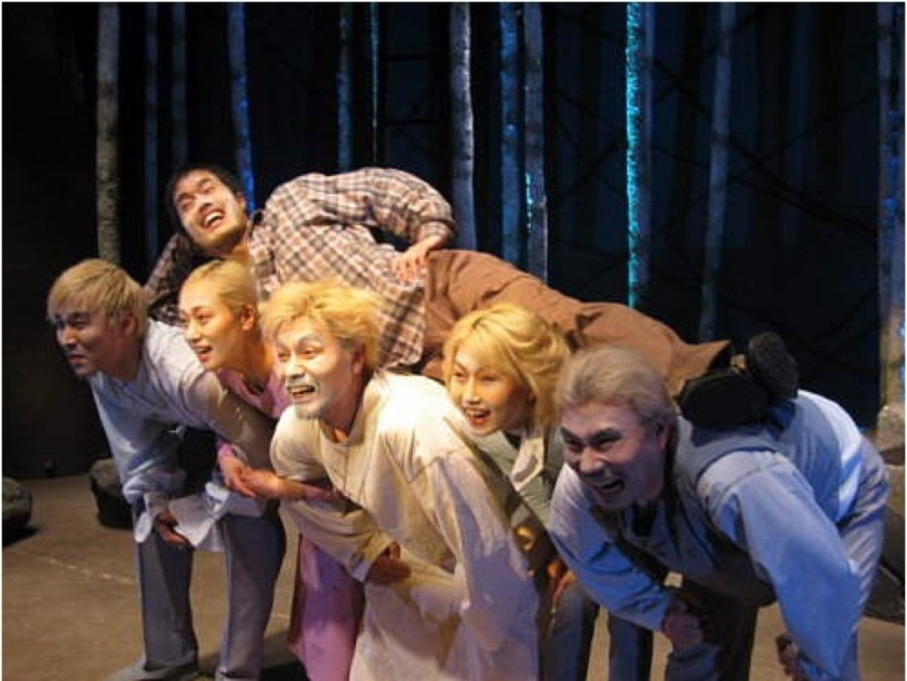
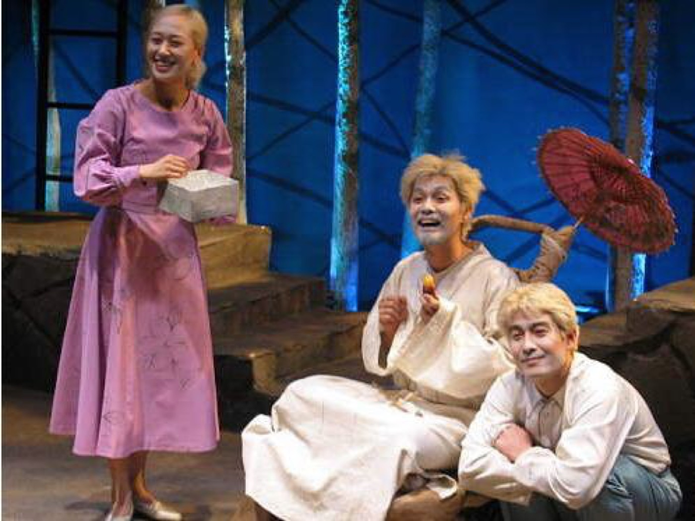
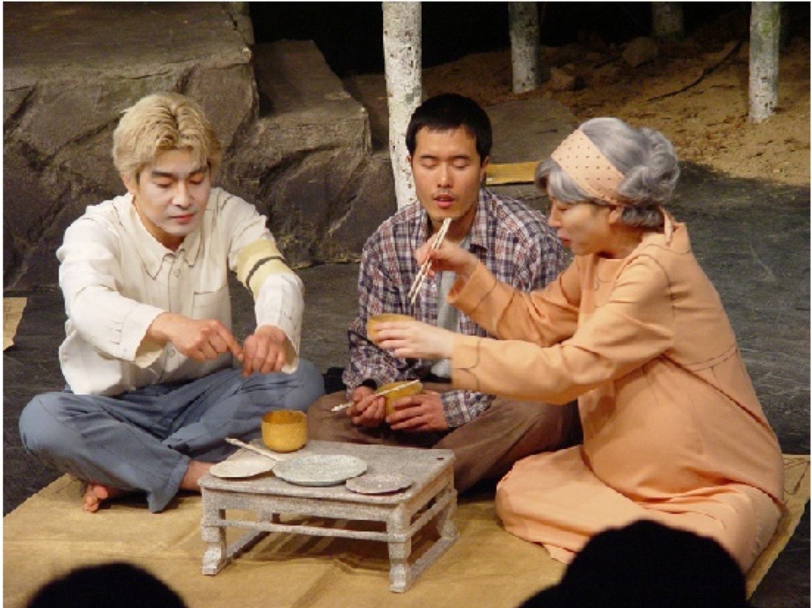
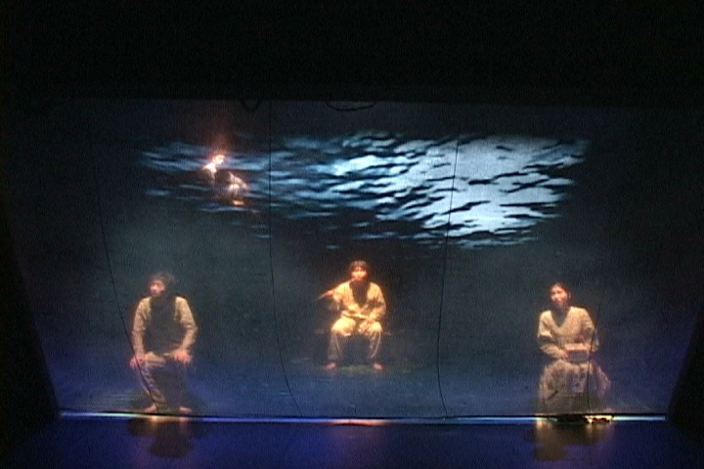

Performance — 2007
Showman-Shaman쇼맨샤먼 · 허송세월 프로젝트
무당의 아들인 연출가가 가족과 고향의 기억을 극중극으로 다시 짓는다 — 쇼맨과 샤먼, 무대 위에서 겹쳐지는 두 개의 이름.
A director, son of a shaman, rebuilds the memory of family and home as a play within a play — showman and shaman, two names overlapping on stage.
연극 연출가 홍무는 자신의 가족과 고향에 대한 기억을 작품 속에 재구성하려 합니다. 그가 쓴 대본 속 인물들 — 무당이었던 어머니 현녀, 아버지 만부, 형 홍일과 형수, 옛 연인 지인 — 은 상상의 공간에서 함께 연습하고 대화하며 극을 완성해 갑니다. 연습이 진행되는 사이사이 은폐되어 있던 기억과 상처들이 조금씩 모습을 드러내고, 홍무는 자신이 창조해 낸 장면들 속에서 가공된 기억과 은폐된 기억 사이를 방황합니다. 치열하게 기억의 실마리를 쫓던 그는 황폐한 진실만을 발견하고, 그 기억의 끝에 존재하는 지인을 만납니다.
연출 노트의 스타일 지침은 이 작품의 톤을 정확히 말해 줍니다 — 낡고 오래된 느낌은 덜어내고, 《이상한 나라의 앨리스》처럼 괴기스러우면서 희극적으로. 망자들은 금발 가발과 화사한 의상으로 컬러풀하게 부각되어, 그 화사함이 오히려 망자의 이질감으로 다가옵니다. 자작나무 숲의 무대 위에서 굿과 서커스, 뮤지컬적 화해의 장면이 이어지고 — “이곳은 기억의 카바레” — 미디어 디자인 영상이 기억의 장면들을 드리웁니다.
The director Hong-mu sets out to rebuild his family and hometown in a play. The figures of his script — his shaman mother Hyeon-nyeo, father Man-bu, brother and sister-in-law, old love Ji-in — rehearse and talk in an imagined space, completing the play together. Between scenes, buried memories and wounds surface little by little, and Hong-mu wanders between fabricated memory and concealed memory, chasing the thread until only a desolate truth remains — and at the end of memory, Ji-in. The style note fixes the tone exactly: strip the old and musty away, make it grotesque yet comic, like Alice in Wonderland. The dead are rendered colourful — blond wigs, bright clothes — their brightness itself the strangeness of the departed. On a stage of birch forest, shamanic rite, circus and a musical scene of reconciliation follow one another — ‘this is the cabaret of memory’ — under media-design video casting the scenes of remembrance.
- 작
- Written by
- 김학선 Kim Hak-seon
- 재구성·연출·영상
- Adaptation, direction, video
- 김제민 Kim Jae Min
- 기획
- Producer
- 황순원
- 규모
- Company
- 배우 9인 · 스태프 6인
- 9 actors · 6 staff
- 제작
- Produced by
- 허송세월 프로젝트 — ‘비워 보낸다’는 뜻의 비주얼 씨어터. 극단 거미의 전신.
- Empty Time Project — the visual theatre that preceded Theatre Company Geomi.
- 키워드
- Keywords
- shamanism · memory · play within a play · colourful dead
과정 — 무우당에서 쇼맨샤먼으로
Process — from Muudang to Showman-Shaman
기억의 카바레를 짓다
Building the cabaret of memory
김학선의 희곡 《저 사람 무우당같다》를 장면 단위로 해체해 다시 짰습니다. 재구성안에는 ‘소풍’에서 시작해 1경이 연극 상황임을 뒤집어 보여주는 ‘연극 속의 홍무’, 배우들과의 화해를 뮤지컬로 푸는 ‘연극의 여행자’, ‘아버지의 개족보’, 그리고 서커스단이 공중그네를 타는 ‘공중그네 서커스’까지 — 굿의 형식과 쇼의 형식이 번갈아 이어집니다. 아르코 신진예술가 데뷔 프로그램 선정작으로, 공연 때 가제였던 ‘쇼맨샤먼’이 그대로 제목이 되었습니다. 무속 리서치와 미디어 디자인 영상 작업이 창작 과정을 받쳤습니다.
Kim Hak-seon’s play was broken into scenes and rebuilt: from ‘Picnic’ through ‘Hong-mu Inside the Play,’ which flips the first scene into rehearsal; a musical reconciliation in ‘Traveller of the Theatre’; ‘Father’s Tangled Genealogy’; to the ‘Trapeze Circus’ — rite and show alternating throughout. Selected for ARKO’s young-artist debut programme, the working title ‘Showman-Shaman’ became the title itself. Shamanic research and media-design video underpinned the process.
- 스타일 노트
- The style note
- “망자이면서 물속의 판타지적 요소. 괴기스러운데 희극적인. 캐릭터를 컬러풀하게 부각 — 그 컬러풀함이 망자로 느껴지는 이질감으로 다가와야 함.”
- “Dead, yet with an underwater fantasy. Grotesque but comic. Make the characters colourful — and let that colour arrive as the strangeness of the dead.”
공연 기록 — 아룽구지 소극장, 2007
Performance record — Aroonguji Theater, 2007


